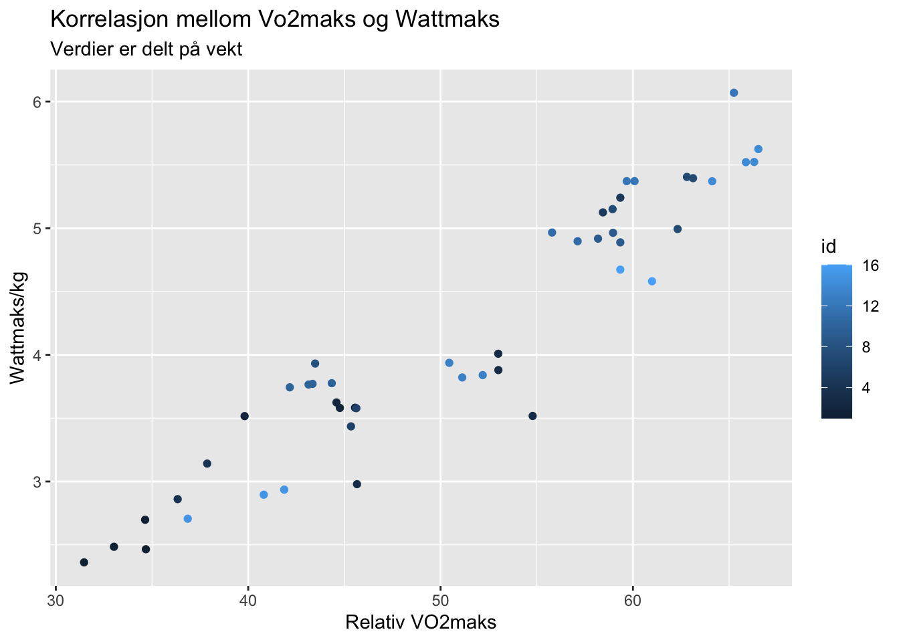

Code
library(readxl)
library(tidyverse)
library(ggplot2)
library(dplyr)
library(magrittr)
library(gt)
df <- read_xlsx("data/o2-test.xlsx")Det ble gjennomført fire testdager 28.08.2024, 29.08.2024, 9.09.2024 og 11.09.2024 for å teste VO2maks. Formålet med disse testene var å øve på å kunne gjennomføre fysiologiske tester med høy reliabilitet. Reliabilitet refererer til graden av konsistens eller pålitelighet i målinger evnen til å kunne reprodusere (Hopkins,2001), et eksempel på dette er ved fysiologisk testing som repeteres i forskningsprosjekter, der bedre reliabilitet vil indikere hvor god presisjonen er og måling av endring over tid (Hopkins,2001). Det er mange begreper som er relevante for å kunne si noe om reliabilitet, men standardavviket er et av disse. Standardavviket sier noe om hvor langt unna verdiens gjennomsnittlige avstand er fra gjennomsnittet (Spiegelhalter 2020)
Kroppens maksimale oksygenopptak (VO2maks ) sier noe om kroppens maksimale evne til å ta opp og omsette oksygen (Bassett and Howley 2000) . VO2maks kan beskrives ved hjelp av Ficks likning: VO2maks=MVmaks x a-vO2differansemaks. VO2maks måles ved at man måler hvor mye oksygen kroppen klarer å omsette pr minutt (Bassett and Howley 2000). Det finnes ulike måter og fremstille VO2maks på de to av disse er absolutt VO2maks beskrevet som (ml/min) eller relative tall relatert til kroppsvekt (ml/kg/min).
Vi har i resultat delen valgt å fremstille effekt maks (Wmaks) som er et mål på snitteffekt det siste minuttet av VO2maks testen basert på kroppsvekt. Wmaks/kg sett opp i sammenheng med den relative VO2maks (ml/kg/min). Forskning viser at at høy VO₂maks sammen med god mekanisk effektivitet og høy laktatterskel gir bedre utholdenhetsprestasjoner, noe som reflekteres i høyere Wmaks/kg (Joyner and Coyle 2008).
VO2maks testen ble gjennomført på en ergometersykkel med bukkestyre (Lode Excalibur Sport; Lode B.V., Groningen, Nederland). Kranken kalibreres på Lode sykkelen før hver teststart, og sykkel stilles inn etter utøver sitt ønske ved første test og stilles inn til den samme sittestillingen påfølgende tester. For å måle det maksimale oksygenopptaket ble det brukt Vyntus (Jaeger Vyntus CPX, Hoechberg, Tyskland). Gassanalysator kalibreres til < 2,0% differanse og luftvolum kalibreres til < 0,2% differanse. Zeroing gjøres også alltid før test starter. Syklistene veies med de klærne de skal sykle med, og 0,3kg trekkes fra. For å kunne sikre god relabilitet ble det tydeliggjort at man skulle replisere det siste måltidet før test, ha det samme koffeininntaket, avstå fra alkohol og tobakk de siste 72 timene før test og prøve å få tilnærmet lik søvn, samt trene det samme dagen før test. Da dette er faktorer som kan spille inn på prestasjon og metabolismen (Tanner & Gore, 2013) og dermed påvirke relabiliteten. Hvorvidt dette er fulgt er noe usikkert da dette ikke er fulgt opp videre annet enn at det ble informert om før første testdag.
VO2maks testen gjennomføres etter en 5min standardisert oppvarming på ergometersykkelen. Oppvarmingen starter med en 2 min oppvarming på 11-12 i Borg, deretter 2min på 15 i Borg før 1min på 11-12 BORG. Testen starter på en belastning (Watt) basert på deltagerens nivå i samråd med utøver og testleder. Det viktigste er at påfølgende VO2maks tester starter på samme watt. Wattbelastningen økte med 20W eller 25W hvert minutt frem til utøveren når maksimal utmattelse er oppnådd. Maksimal utmattelse ble i denne sammenheng ikke evne til å kunne opprettholde RPM≤ 60. Under VO2maks var RPM valgfritt. Testleder gjør verbal oppmuntring og sekundering underveis i testen. For at verbal oppmuntring og instruksjon ved test skulle være lik etterstreb vi å ha samme testleder til samme test person (Halperin, Pyne, and Martin 2015). Det blir målt oksygenmålinger hvert 30 sek, og de to høyeste påfølgende målingene blir definert som VO2maks. Umiddelbart etter test oppgir utøveren opplevd anstrengelse på BORG skala. Maks hjertefrekvens blir lest av fra utøverens egen pulsklokke. Blodprøve ble tatt fra utøverens fingertupp 1 min etter endt test for å måle [BLa-]. [BLa-] blir videre målt videre målt ved hjelp av en Biosen C-line (Biosen C-line Lactate Analyzer, EKF Diagnostic GmbH, Barleben, Germany) .Etter endt test ble det hentet ut data som videre ble plottet inn i Excel og videre ført statistikk på ved hjelp av Rstudio.
library(readxl)
library(tidyverse)
library(ggplot2)
library(dplyr)
library(magrittr)
library(gt)
df <- read_xlsx("data/o2-test.xlsx")#Last inn datasettet
df.tbl <- df |>
#Velg hvilke variabler som skal med videre
select(id, timepoint, weight, w.max:borg.max) |>
#Fjern verdiene som har characters
select(-hr.max) |>
select(-la.max) |>
select(-bf.max) |>
select(-vco2.max) |>
select(-rer.max) |>
select(-ve.max) |>
#Lag nye verdier, relativ vo2maks og wattmaks/kg
mutate(rel.vo2max = vo2.max / weight) |>
mutate(rel.wmax = w.max / weight) |>
#Sliter fortsatt med å forklare pivot både longer og wider
pivot_longer(names_to = "ID",
values_to = "verdier",
cols = w.max:rel.wmax) |>
#Grupper etter id og names
group_by(id, ID) |>
#Summarise gjennomsnitt og standardavvik til verdiene
summarise(m = mean(verdier),
s = sd(verdier)) |>
mutate(m_s = paste0(signif(m, 3), " (", signif(s, 2), ")")) %>%
ungroup() |>
select(-m, -s) |>
pivot_wider(names_from = "id",
values_from = "m_s") |>
gt()
df.tbl |>
text_replace(
pattern = "^bf.max$",
replacement = md("Bf<small>(maks)</small>")) |>
text_replace(
pattern = "^borg.max$",
replacement = md("Borg<small>(maks)</small>")) |>
text_replace(
pattern = "^rel.vo2max$",
replacement = md("VO<sub>2maks</sub><br><small>(ml/kg/min)</br></small>")) |>
text_replace(
pattern = "^rel.wmax$",
replacement = md("Wattmaks/kg")) |>
text_replace(
pattern = "^vo2.max",
replacement = md("VO<sub>2maks</sub><br><small>(ml/min)</br></small>")) |>
text_replace(
pattern = "w.max$",
replacement = ("Wattmaks")) |>
tab_options(table.font.size = 10)| ID | 1 | 2 | 3 | 4 | 5 | 6 | 7 | 8 | 9 | 10 | 11 | 12 | 13 | 14 | 15 | 16 |
|---|---|---|---|---|---|---|---|---|---|---|---|---|---|---|---|---|
| Borg(maks) | 19.2 (0.96) | 19 (0.82) | 18 (1.2) | 19 (0) | 19.5 (0.71) | 19 (0) | 17.5 (1.7) | 17 (NA) | 19.7 (0.58) | 20 (0) | 17.5 (0.71) | 18 (1.7) | 18.3 (0.58) | 18.8 (0.5) | 17 (1) | 19.5 (0.71) |
| VO2maks (ml/kg/min) |
33.5 (1.5) | 43.7 (2.6) | 51.6 (4.1) | 37.1 (1.1) | 58.9 (0.64) | 45.5 (0.2) | 61.8 (1.9) | 43.5 (NA) | 58.8 (0.59) | 43.2 (0.89) | 56.5 (0.94) | 61.7 (3.1) | 51.3 (0.88) | 65.7 (1.1) | 39.8 (2.6) | 60.2 (1.2) |
| Wattmaks/kg | 2.5 (0.14) | 3.58 (0.044) | 3.6 (0.46) | 3 (0.2) | 5.18 (0.082) | 3.51 (0.1) | 5.24 (0.2) | 3.93 (NA) | 4.92 (0.038) | 3.76 (0.014) | 4.93 (0.049) | 5.6 (0.4) | 3.87 (0.062) | 5.51 (0.1) | 2.85 (0.12) | 4.63 (0.065) |
| VO2maks (ml/min) |
3240 (150) | 2700 (160) | 4130 (300) | 2860 (52) | 4390 (48) | 3710 (6.4) | 5130 (140) | 2540 (NA) | 4650 (41) | 3100 (64) | 3640 (97) | 4480 (230) | 4590 (48) | 4520 (59) | 4100 (270) | 4960 (130) |
| Wattmaks | 243 (13) | 221 (2.8) | 288 (36) | 231 (13) | 387 (6.1) | 286 (7.5) | 435 (19) | 230 (NA) | 389 (2.1) | 269 (1.2) | 318 (0) | 407 (29) | 347 (6.9) | 380 (5.7) | 293 (12) | 382 (3.1) |
df.rel <- df |>
select(id, timepoint, weight, vo2.max, w.max) |>
mutate(rel.vo2 = vo2.max / weight) |>
mutate(rel.wmax = w.max / weight)df.rel |>
#velger hvilke variabler vi er interessert i å se på
select(id, timepoint, rel.vo2) |>
#benytter oss av pivot_wider for å lage tidy_data
pivot_wider(names_from = timepoint,
values_from = rel.vo2) |>
mutate(diff = t2 - t1) |>
summarise(MEAN = mean(c(t1, t2), na.rm = TRUE),
SD = sd(diff, na.rm = TRUE),
TE = SD / sqrt(2),
CV = TE/MEAN * 100) |>
gt() |>
fmt_number(decimals = 2)| MEAN | SD | TE | CV |
|---|---|---|---|
| 52.44 | 1.83 | 1.30 | 2.47 |
cv_perct1_t2 <- 2.47Reliabiliteten mellom t1 og t2 er 2.47%.
df.rel |>
#velger hvilke variabler vi er interessert i å se på
select(id, timepoint, rel.vo2) |>
#benytter oss av pivot_wider for å lage tidy_data
pivot_wider(names_from = timepoint,
values_from = rel.vo2) |>
mutate(diff = t4 - t3) |>
summarise(MEAN = mean(c(t3, t4), na.rm = TRUE),
SD = sd(diff, na.rm = TRUE),
TE = SD / sqrt(2),
CV = TE/MEAN * 100) |>
gt() |>
fmt_number(decimals = 2)| MEAN | SD | TE | CV |
|---|---|---|---|
| 48.64 | 3.29 | 2.32 | 4.78 |
cv_perct3_t4 <- 4.78Reliabiliteten mellom t3 og t4 er 4.78%.
df %>%
mutate(rel.vo2max = vo2.max / weight) %>%
mutate(w.max.kg = w.max / weight) %>%
ggplot(aes(x = rel.vo2max,
y = w.max.kg,
color = id)) +
geom_point() +
labs(x = ("Relativ VO2maks"),
y = ("Wattmaks/kg"),
title = "Korrelasjon mellom Vo2maks og Wattmaks",
subtitle = "Verdier er delt på vekt")
Jeg fikk dessverre ikke til å gjøre om på hver enkelt farge, for å lettere kunne skille ulike id´er fra hverandre.